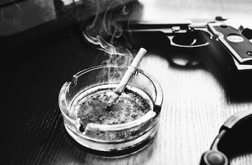

Day 9: This Is Fine
It was midday, and an unexpected solar eclipse darkened the lands of Joistown. Paul squinted up at the sky from outside the house, holding the end of a long fuse and looking incredibly tired.
Hours earlier, he had been up all night staring intently into his grandmother's prized crystal ball, waiting for images of the future to reveal themselves. As usual, at the stroke of midnight, shapes began to materialize and a face formed in its cloudy swirls. It was a face he knew, and it was licking bloody lips while laughing maniacally up at the sky.
Paul leapt up and ran immediately to tell his neighbor, Sandeep, what he had seen. Sandeep was bunkered up and armed to the teeth as he was known to do, and Paul accidentally set off one of his tripwires which activated floodlights and alarms. Sandeep saw it was Paul and turned off the alarm. The extensive network of cameras on his property had previously caught Paul peering into his crystal ball through his attic window, and he trusted Paul was not a werewolf. Sandeep received Paul's news, and they both headed to the station to tell the Chief.
When they arrived, the station was locked and Katz was sitting on the front steps. There was a notice on the door: the Chief had been fired for "gross negligence" and "behaviors unbecoming of civic leadership". The Joistown Police Department had been defunded by the municipality effective immediately. Katz said when she showed up to start her midnight shift, they were in the midst of hauling the Chief out by his ear. She said he made quite the scene.
Paul and Sandeep relayed what they had learned: that Peter was either a werewolf or a cannibal. Either way they had to take him down. Finding themselves presently unemployed, they decided they had nothing to lose so Katz hatched a plan.
"During my previous time in the military, I became quite the expert in explosives. I have a stash of dynamite sticks I keep around for when I get bored- we should grab them and blow up Peter's house. That ought to take care of him real good."
The boys agreed, and the three of them lugged Katz's explosives over to Peter's house. There was no sign of him, but they wired the sticks around the foundation of his house and linked them up with one super duper long fuse. Paul held onto it tightly as the Moon drifted over top of the Sun in the sky.
"Okay this is it", Katz hissed, as she ran up to the front door and rang the doorbell. She scurried back to their hiding spot behind a hedge. Peter was actually home and came to the door wearing his loungewear and slippers. Paul lit the fuse and they watch the spark travel toward the house. Peter shrugged and shut the door.
BOOOOOOOOOOOOOMMM
The foundation blew out from under the house and the upper two storeys crumbled and collapsed inward to form a deep pit of rubble. Peter was buried and mortally wounded. He shapeshifted and tried to break free but all of his bones had been broken. He licked his lips and laughed, "I regret nothing."
THE END.
Good guys win this one:
Katz, Paul, Sandeep,
Aldona*, Alex*, Aleks*, Dave*, Dennis*, Eula*, Janki*, Jason A*, Jason S*, Matt S*, Sushani*, Valeriy*
Werewolves:
Liz*, Peter*, Tunji*, Wendy*
Special roles:
Aldona* (Lover), Eula* (Lover), Jason S* (Hunter), Matt S* (Bodyguard), Paul (Seer), Sushani* (Cupid)
*died
Thanks to everyone for playing, I hope you had fun.
Day 8: Executive Decisions
The department's dwindling headcount had the Chief all worked up in a tizzy. He was down to only six officers and suspected there may still be werewolves in their midst. To make matters worse, the mayor was calling him daily for updates and he had run out of excuses. He was desperate. His mental state was rapidly deteriorating from all the stress. He was losing it.
An idea suddenly came to him that made perfect sense in the moment:
He had six officers.
He had six bullets in his snub-nose .38 special.
"All I have to do is pop them one by one to see who bleeds red and who bleeds... whatever werewolves bleed. Is it red too? Gosh darnit this isn't going to work like that."
He continued mumbling to himself unintelligibly... then hollered for everyone to get into his office, NOW. Everyone scrambled into the crummy little room.
"Thing's are tight. We're out of time and I'm through messing around." He circled his gun around in the air. "On the count of three I need each of you to point at someone you think is holding out on the rest of us. It only makes sense someone here is still a werewolf and I think you know who it is."
The officers looked at each other with uncertainty, but the Chief was really waving that revolver around now and they were afraid to cross him.
"3... 2... 1... Zero."
The majority of fingers pointed at Officer Atkins.
"Well well. Mr. Atkins, it appears I was a little too quick to believe you at your word. It seems your squadmates find you sus."
BLAM BLAM
Jason A crumpled lifelessly to the floor. The Chief stood up and kept his smoking gun trained on the corpse that would surely transform at any moment. But it did not.
"Wellll shit." The Chief collapsed back into his chair and dropped his head in his arms on his desk. "Get out of here, all of you."
---
Dave didn't need to be told twice to book it out of the workplace. Abusive management aside, he had bigger problems to deal with at home. He'd invested all his retirement savings into self-driving carriage stonks and the markets were tanking hard this week. He needed some alone time to think about how he was going to break the news to his wife.
Dave walked the streets alone past dark. The lamplighters had finished their work and there was only the sound of the wind and Dave's footsteps. Until Dave started to feel he wasn't alone at all. He drew his collar up to his face and glaced back sideways. There was nothing but darkness and he quickened his pace. He could hear the faint clacking of other footsteps behind him and realized he was being tailed. He began to run; the distant footsteps sped up to a galloping cadence.
Dave raced frantically now, he could sense the gap was closing. He knew he wasn't going to get away. He stopped and turned, pulled out his service weapon- the wolf slammed into him and knocked him to the ground. It leapt onto Dave's chest and knocked the air right out him. The wolf's hot breath smelled of coffee and donuts but also rotting flesh. It was awful. Dave closed his eyes as the life was torn from his body.
Day 7: Clocking Out
It was Wednesday my dudes, and Tunji had just finished up his shift. He had been covering traffic duty all day and his arms were tired. He was looking forward to picking up a nice gelato on the walk back to his apartment in Little Italy.
The lockerroom seemed unusually quiet. There should have been others getting off shift as well around that hour, but he was all alone. Tunji closed up his locker and strolled out through the empty processing area toward the exit. The entrance's double doors revealed a large group of black-hooded figures bearing torches.
Tunji sighed, "Well. This is a problem. But I have a SOLUTION!" He threw a mini smoke capsule from his waistline and spun around inside a smoky cloud of transformation. An enormous werebeast emerged and swiped deep gashes into the concrete balustrades of the station's front steps. "Let me pass or I shall feast on you all!"
The mob would have none of it, and thrust their torches forward. Tunji barrelled into them, chomping and gnashing as his fur was lit ablaze. Torches dabbed and dabbed at the thrashing werewolf until it was engulfed in a fireball of green fluorescence, eventually leaving behind a charred human skeleton.
The werewolf was dead. The surviving townsfolk gave each other high fives and did their customary little jigs. They reconvened at a nearby speakeasy to celebrate and closed out the night with a midnight pool party at Jim's house.
Aleks remembered she would have to get up early to file HR paperwork concerning Tunji and all the PD employee deaths from earlier. She bid everyone a good night and left but never made it home. Her body was found the next morning on the side of the road, partially eaten by some sort of wild animals.
Day 6: Give Me Some Names
With the last of the one-on-ones completed, the Chief emerged from his office.
"I appreciate your cooperation with working this case so far. We've got a good list of names to work with. Atkins! What exactly do you have to say for yourself? Your name came up more than anyone else's."
"Umm... how about... I didn't do it?"
"Good enough for me. Wendy! You were also pretty up there on the suspect list. What say you?"
"Oh, well I have an alibi for every single murder that's happened so far. I mean, I don't know anything about this. As I mentioned before in your office, I'm not feeling well today and I need to go home right away now. I need to care for my cat who is sick."
The Chief arched an eyebrow. "I see. Well how about we take this conversation down the hall. We can have a seat and talk all of this out...
Sensing things were not going well, Wendy made a move for the nearby window, but was shoved into a desk by one of the other officers. Matt rushed over to help her up, and tried to shield her from those moving in on her.
"Stop! Stop this! We can't turn against one another like this. Wendy, run! I will protect you!"
"Thanks Matt, I appreciate the help." Wendy took the moment of distraction to stand back up and assume her most powerful form. Her legs stretched and her frame filled out. Rippling muscle exploded from the seams of her uniform. She wiped a clawed hand across her frothing mouth then grabbed Matt from behind. Her jaws clamped onto his shoulder and ate into his flesh. Matt screamed and was thrown overhead and through the window to provide direct means of escape. Matt did not stick the landing.
Werewendy leapt after him, but misjudged her now oversized body and slammed into the window frame, stumbling back inside for a moment. The officers grabbed hold of her furry back and managed to overpower her. There was no thought for law and order at this point, only justice, and Wendy was hanged out the window as a warning for any other of her kind.
Day 5: Hampered Judgements
Janki sleeps by moon's red glow
Forever. Howling winds.
Day 4: Sweet Dreams
The Friday sun dipped below the horizon and would not emerge again til Monday. The weekend's darkness dragged on endlessly, leaving the townsfolk of Joistown nothing to do but catch up on sleep.
Unfortunately for Dennis, the werewolves were just as violently active in his nightmares as they were in the parks and streets. He struggled and fidgeted in his bed. Everyone knows if you die in a dream, you die in real life, so the stakes were high.
At one point he found himself confronted by a dozen burly wolfmen atop the town's tallest building. He had two options: fight his way through or leap from the edge and hope for a balcony somewhere below. He chose to fight of course, dreaming of extensive martial arts tactics. He delivered thundering handclaps across their woolly wolf faces and they fell one by one.
In reality Dennis had acted out his dreamstate downstairs and onto the lawn. He had been thunderclapping neighbors who tried to come to his sleepwalking aid. Naturally they took offense, and misinterpreted his erratic behavior (and furry bedhead) as acting out as a werewolf. They strung him up just to be safe.
---
Across town, Valeriy was not able to sleep. He had heard a sharp rapping at his door, but whenever he answered there was never anyone there. This had happened once, twice, three times in as many minutes. He waited at the door for a fourth set of knocks and flung it open to catch the young pranksters in the act. It was instead an old friend from the station who stood there calmly and tipped their police cap.
"Howl do you do, Valeriy?"
The friendly face twisted and teeth snapped at Valeriy, who was made to be a tasty midnight snack.
Day 3: Everyone Is Invited
Alex and Sushani were first to respond at the Slater residence. It was an ugly sight to behold. Jason and Liz were dead, and neighbors were insistent Liz had transformed into some sort of Bigfoot-looking werewolf animal. They also said she wasn't alone in the attack.
Alex noticed some blood on the bottom of his shoes and scuffed them clean on the lawn. "Well... if I believed in fairytales it certainly looks like what these folks are saying happened, happened. But I don't know... Liz? Really? It doesn't make sense."
Sushani pulled back the tarp that had been laid down and inspected Liz's uniform. Hey Alex, have a look at this. Didn't the report say that Garfield stiff had a torn off piece of pant leg near 'im? Liz ain't got no torn pant leg. She couldn't have done it."
"Sure maybe, but that's a pound of Slater's lead planted in her so I'm guessing she wasn't here to tuck him in goodnight."
"Good point. Here comes the meat wagon. Let's call it a night and meet up at the station in the morning."
---
The station was quiet the next morning. Officers milled around discussing what had happened to Slater. And Liz. And Aldona. Valeriy was stapling posters up on the corkboard in the foyer. They each had a crudely drawn photo of a steak roasting over a campfire, and read:
FULLL MOON PARTY.
TONIGHT 9PM.
ACKBAR PARK.
He stepped back to admire his work, nodded, and went back to his desk.
The Chief came out of his office and called everyone around him.
"Look umm... I know this has been a rough year for the department. We trust our gut... and may not always do things by the book, but we always get results in the end, damnit. We're going to find this so-called "were-wolf", he gestured with airquotes.
The Chief waited for response, and an awkward silence followed as the officers were uncertain if the Chief was finished or would continue on to make some sort of point.
"Let's just go and lay down some justice for our lost brothers and sisters." He turned and ducked back into his office, closing the door behind him.
---
It was 8:55pm, and Brendan was set up with his lawnchair, binoculars, and box of popcorn in the bushes on the edge of Ackbar Park. He had been to the police station earlier in the day to report some missing invoices he had been expecting, and noticed the party posters on the wall. He wasn't planning to get involved per se, he just liked to watch.
It seemed Alex had also taken note of the posters and wandered into the park not long afterward. He still wasn't convinced there were werewolves, but he wondered if he might pick up some easy tickets for illegal open fires on public property.
The other officers all watched invisibly from their own bushes as he wandered around not finding any partyers in the park at this hour.
"That's it, I'm moving in," one of the officers rasped impatiently. It was too dark to tell who it was.
All the officers emerged and surrounded Alex in a circle.
"Whoa hey what's going on guys?" Alex said, surprised.
"We might ask you the same thing. Maybe out here looking for a bbq? Some fresh meat?"
"Uhmmm noo... I was doing some police work. My job. I'm not sure why you're all treating me suspiciously for doing regular police things."
"Sounds exactly like something a werewolf would say!"
"What? That doesn't- you're not making any sense!"
GET HIM.
All at once and together they rushed Alex and beat him down to the ground as one of them knotted up a park garden hose into a noose.
"Guys. Guys. This... is ridiculous. Stop."
The rubber noose slipped over his head, and he was hoisted up into a tree where he perished. But his body didn't transform or sprout whiskers, or anything they expected, and they all started to worry someone might have seen what they'd done. They fled the scene.
Sushani fled particularly quickly and slammed into Brendan who was tugging his peeping gear out of his spot. They both fell and became entangled in Brendan's bush.
Capitalizing upon their vegetation complication, they were set upon by a werewolf who ate them both up. Bones, clothes, and all.
Day 2: Hold The Line
Quite the mob had developed around the police station. Chants of "Defund The Police!" were intermixed with calls for the Chief's resignation. It was later in the afternoon now and officers were filing in through the back door off the station's alleyway.
Liz squeezed roughly through the front door and slammed it shut with her body.
"Those bastards! With everything we do for them you'd think they'd have a little more respect and let us do our jobs!"
"Well this time those sheeple out there may have a point. Are we missing anyone here? Everyone I talked to today was convinced the killer is someone with a badge... as far as I'm concerned you're all suspects for the Chief."
"Well the Chief ain't here yet is he", sneered Officer Slater. Maybe you ought to keep your nose clean and think about holdin the line like the rest of us. I know I ain't no killer. Unless someone deserves it."
The room started to get a lot more crowded around Aldona.
"It's a shame there's a dirty rat cop everyone's got pegged as the killer, hey Aldona," piped one of the others. "I bet the mayor would be real pleased if he heard we took em out."
Aldona made a dash for the backdoor but was overwhelmed. One of the sketchier coppers yanked out a bootlace and jerked it around Aldona's neck from behind. She struggled for air... and unceremoniously blacked out, permanently.
"Case closed."
...
One of the officers fed the story to their man on the street, Max Joliet, who was more than happy to run with the splashy story of Aldona the killer cop, taken down by her peers once they'd finally cracked the case. It would print in the morning, and the people of Joistown could breathe a sigh of relief.
Jason Slater was now at home taking out the nightly garbage, re-running the day's events through his head. He was pretty sure Aldona was a good cop, but her probing internally might have taken them all down. He'd be able to reconcile what they'd done in his head by morning.
He looked up from the trash can and saw a group of shadowy figures not ten feet away. The houselights reflected off their eyes and appeared to glow in sickly red-yellow swirls.
Jason reached for his service weapon and straight up blasted one. The stopping power of his piece proved not enough for the beastly animals that rushed him and they began tearing him to shreds. He managed to get off the last of his rounds and clipped his target werebeast with a few more in the neck. Putrid, puss-filled liquid sprayed from the animal as it slumped to the ground. It wriggled and transformed back into humanly, Liz-shaped form.
Then Slater finally died, and a short feast was had.
...
The morning paper arrived, and Eula took once glance at the headline: Aldona She-Gone-a.
"Ohhhh my beloved!"
Eula clutched at her chest and died of heartbreak.
Day 1: You Have Your Assignments
The coffee was nearly all poured out and seating was limited in the station briefing room. Detectives eyed each other quietly from the rows of tablet desks.
"Listen up!"
The Chief entered briskly from the entrance at the front of the room.
"And close that door at the back there! Look, I know half of you just transferred in and don't know your beltbuckle from your anklebone, but we've got a real sick set of individuals out there on this one and no time for hand-holding."
He produced a stack of papers from behind the podium at the front of the room, which were disseminated through the rows.
"Homer Garfield, 32: attacked while jogging in Jubilee Park, dead. Oprah Jetson, 27, and her grandmother Wilma, 63: mauled in the supermarket in broad daylight! The list goes on... the circumstances of the scenes indicate multiple truly violent offenders working together. You'll see from these reports that we have virtually no leads at this time, which I'm counting on you for. A-S-A-P.
As I'm sure you've also noticed by now, this department lacks the resources to formally partner you up as your orientation officer may have previously explained, but I expect you'll work together where you can. This room will be left open as a strategic point of information sharing. Now get the hell out of here and get me a suspect by 4:30!"
---
"EXTRA EXTRA! SERIAL KILLER COP ON THE LOOSE!"
"Hey kid, gimme one a those."
"Sure thing mister, that'll be a dime."
Joliet, M. (2022, June 8). KILLER COP. Joistown Evening Tribune, p. 1.
Anonymous sources confirm a shred of bloodied fabric discovered near Homer Garfield's remains are a match with those used in standard issue police uniforms. Local PD continues to refuse comment, citing "ongoing investigations" as residents begin to gather outside of the department headquarters.
Mayor Wilkins has issued a public statement calling for an immediate inquiry into all police whereabouts Tuesday evening, along with an inventory of all PD member uniforms and their present conditions.
Stay tuned for more new news as it brews, dear readers, care of your man on the street, Max Joliet.
Day 0: Who Is Accounted For
Stan Spade slotted the stack of crimescene photos back into their envelope and tossed the wad across his desk. This wasn't the usual flophouse fisticuffs gone wrong- these stiffs was all shredded up like cheese on a grater. The press was gonna eat this up once they found out, and he knew he'd have the Chief riding his keister 'til it got sorted.
"Maybe I should leave these files right where I found em", Stan thought to himself. "Right there on the crummy desk. I'm getting too old for this... leave the badge, retire... maybe finally find a nice dame somewhere. Live the quiet life... aw who am I kiddin', that life ain't for me."
Stan lit a cigarette, and thought about his next move. It was already late, and he knew he would need help on this one. But he also wasn't sure who he could trust. IA had been going hard on corruption in the force lately, and no one was exactly in a helpin' sort of mood.
He heard what sounded like howling in the distance. It didn't quite sound like the wailing of a squadcar siren, but it was far enough away that who could tell.
Stan tapped out his cig, put on his hat, grabbed his coat and headed for the door. He'd take a few days to think about the case, and which of the other detectives he could count on to not mess this one up. Hopefully it would stay out of the press until then.
---
YOU are a criminal investigator with the Joistown PD. The Chief has called a meeting in the briefing room, Wednesday morning at 9am EST, to discuss a series of grisly homicides that were discovered this week.
---
The game will begin next Wednesday at 9:00am EST. If you choose to participate, DM or email Cory to confirm before end of day Friday. I’m anticipating we may have a large number of players, so you may be partnered up with another detective when working out your investigation.
